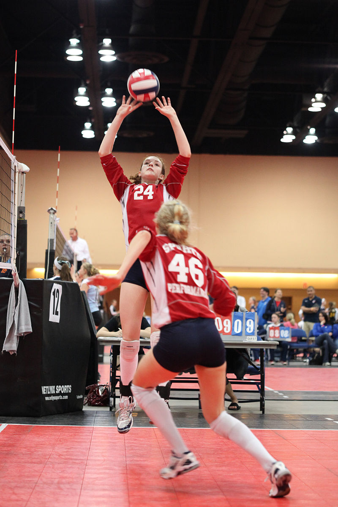
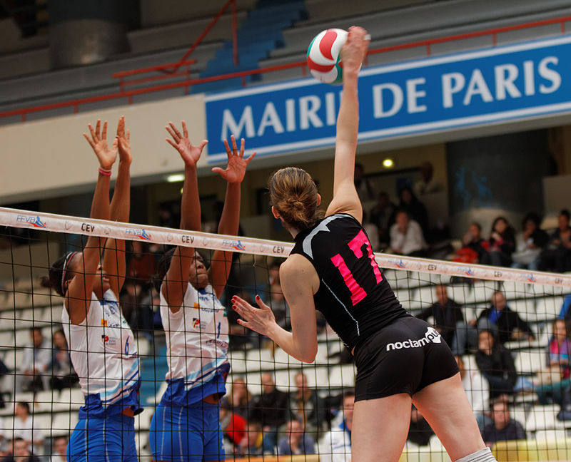
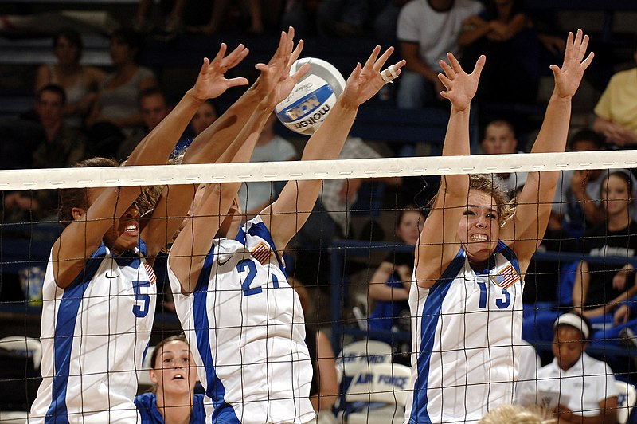

Estilo de juego avanzado
Colocación

Normalmente el segundo toque tiene como fin proporcionar un balón en condiciones
óptimas para que con el tercer toque un rematador lo meta finalmente al campo
contrario. La colocación se realiza alzando las manos con un pase de dedos,
el pase más preciso en el voleibol. El colocador tiene en su mano la
responsabilidad de ir distribuyendo los balones a lo largo del juego, a los
distintos rematadores y por las distintas zonas.
La colocación es el elemento principal en la composición del equipo y en el
juego. Por el número de contactos y posibilidad de ataque el colocador adquiere
una importancia máxima pues esta acción condiciona la efectividad del ataque y
la distribución del juego. Todos los jugadores deben dominar esta acción.
El colocador debe estar junto a la red, un poco separado de esta para no
tocarla al girar y no a demasiada distancia como para que tenga que moverse
hacia ella para interceptar el balón. Su postura será natural, relajada y
alerta, para facilitarle un cambio rápido que permita corregir una recepción
errónea o un desplazamiento a una zona imprevista.23
Ataque-remate

Remate de una jugadora (de negro) frente al bloqueo de dos jugadoras (de blanco).
El jugador, saltando, envía finalmente el balón con fuerza al campo contrario
buscando lugares mal defendidos, o contra los propios jugadores contrarios en
condiciones de velocidad o dirección tales que no lo puedan controlar y el balón
vaya fuera.
El jugador también puede optar por el engaño o finta dejando al final un balón
suave que no es esperado por el contrario. Aunque se dispone de tres toques de
equipo, se puede realizar un ataque (o finta) en los primeros toques para
encontrar descolocado o desprevenido al equipo contrario.
Se nombran distintos tipos ataques con el número de la zona:
Ataque zaguero: Es el que realizan los que se encuentran en las posiciones
defensivas sin sobrepasar o tocar la línea de 3 metros.
Ataque por 4: Es el ataque que realiza el atacante que se encuentra en zona 4.
Ataque por 2: Es el ataque que realiza el atacante que se encuentra en zona 2.
Ataque central: Es el ataque que realiza el atacante de zona 3.
Bloqueo

Bloqueo defensivo de tres jugadoras que ha sido superado por la pelota de la
atacante.
En 1938 los jugadores checos perfeccionaron el bloqueo que se incluyó en la
reglamentación como una neutralización en la red por uno o dos jugadores
contiguos.13
Esta acción encaminada a interceptar cualquier ataque del equipo contrario,
saltando junto a la red con los brazos alzados buscando devolver directamente
el balón al campo contrario, o en su defecto, estrecharle el campo de ataque
para inducirlo a echar el balón fuera del terreno de juego. En el bloqueo
pueden participar hasta tres jugadores (los tres delanteros) para aumentar
las posibilidades de intercepción. También serán importantes aquí las ayudas
de la segunda línea para recuperar el balón en caso de un bloqueo fallido.
Una de las opciones que tiene el atacante en salto es precisamente no evitarlo,
sino lanzar el balón con fuerza directamente contra el bloqueo, forzando el
fallo y la correspondiente falta.